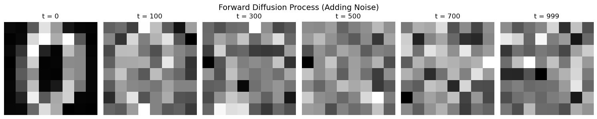

import torchimport torch.nn as nnimport torch.nn.functional as Fimport torch.optim as optimimport numpy as npimport matplotlib.pyplot as pltimport matplotlib.animation as animationfrom sklearn.datasets import load_digitsfrom torch.utils.data import DataLoader, TensorDatasetfrom tqdm import tqdmimport seaborn as snsfrom IPython.display import HTMLimport warningswarnings.filterwarnings('ignore')# Set random seed for reproducibilitytorch.manual_seed(42)np.random.seed(42)# Set up plotting styleplt.style.use('seaborn-v0_8')sns.set_palette("husl")Diffusion models have become one of the most powerful approaches for generative modeling, powering everything from DALL-E to Stable Diffusion. At their core, they work by gradually adding noise to data and then learning to reverse this process. The key insight is surprisingly simple: if we can learn to denoise images at different noise levels, we can generate new images by starting with pure noise and progressively denoising it. This tutorial implements a minimal diffusion model using PyTorch and the sklearn digits dataset.## The Math Behind DiffusionThe diffusion process consists of two parts:Forward Process (Adding Noise): We gradually add Gaussian noise to clean images over \(T\) timesteps:\[q(x_t | x_{t-1}) = \mathcal{N}(x_t; \sqrt{1-\beta_t} x_{t-1}, \beta_t I)\]Reverse Process (Denoising): We learn to reverse this process:\[p_\theta(x_{t-1} | x_t) = \mathcal{N}(x_{t-1}; \mu_\theta(x_t, t), \sigma_t^2 I)\]The beautiful mathematical insight is that we can train a neural network to predict the noise \(\epsilon\) that was added, rather than directly predicting the clean image.
Load and Explore the DataWe’ll use the sklearn digits dataset, which contains 8×8 grayscale images of handwritten digits 0-9. This is perfect for our minimal implementation as the images are small and the dataset is manageable.The dataset contains 1,797 samples, each representing a digit as a 64-dimensional vector (8×8 flattened). We’ll normalize the pixel values to the range [0, 1] to match the assumptions of our diffusion model.
# Load and prepare the digits datasetdigits = load_digits()X = digits.data.reshape(-1, 8, 8) # 8x8 imagesX = X / 16.0 # Normalize to [0, 1] (original max value is 16)# Convert to PyTorch tensorsX_tensor = torch.FloatTensor(X).unsqueeze(1) # Add channel dimension: [N, 1, 8, 8]# Create DataLoaderdataset = TensorDataset(X_tensor)dataloader = DataLoader(dataset, batch_size=32, shuffle=True)print(f"Dataset shape: {X_tensor.shape}")print(f"Data range: [{X_tensor.min():.3f}, {X_tensor.max():.3f}]")print(f"Number of samples: {len(X_tensor)}")print(f"Unique digits: {np.unique(digits.target)}")# Show overall data distributionplt.figure(figsize=(12, 4))plt.subplot(1, 3, 1)plt.hist(digits.target, bins=10, alpha=0.7, color='skyblue', edgecolor='black')plt.title('Distribution of Digits')plt.xlabel('Digit')plt.ylabel('Count')plt.subplot(1, 3, 2)plt.hist(X.flatten(), bins=50, alpha=0.7, color='lightgreen', edgecolor='black')plt.title('Pixel Intensity Distribution')plt.xlabel('Pixel Value')plt.ylabel('Count')plt.subplot(1, 3, 3)mean_image = X.mean(axis=0)plt.imshow(mean_image, cmap='gray')plt.title('Mean Image Across Dataset')plt.colorbar()plt.axis('off')plt.tight_layout()plt.show()# Define the diffusion schedulerclass DiffusionScheduler: def __init__(self, num_timesteps=1000, beta_start=1e-4, beta_end=0.02): """ Initialize the diffusion scheduler with a linear beta schedule. Args: num_timesteps: Number of diffusion steps beta_start: Starting value for beta schedule beta_end: Ending value for beta schedule """ self.num_timesteps = num_timesteps # Linear schedule for beta values self.betas = torch.linspace(beta_start, beta_end, num_timesteps) self.alphas = 1.0 - self.betas self.alphas_cumprod = torch.cumprod(self.alphas, dim=0) # Useful for sampling self.alphas_cumprod_prev = F.pad(self.alphas_cumprod[:-1], (1, 0), value=1.0) def add_noise(self, x0, t, noise=None): """ Add noise to clean images at timestep t using the reparameterization trick. Args: x0: Clean images [batch_size, channels, height, width] t: Timesteps [batch_size] noise: Optional noise tensor, will be generated if None Returns: Noisy images at timestep t """ if noise is None: noise = torch.randn_like(x0) sqrt_alphas_cumprod = torch.sqrt(self.alphas_cumprod[t]) sqrt_one_minus_alphas_cumprod = torch.sqrt(1 - self.alphas_cumprod[t]) # Reshape for broadcasting sqrt_alphas_cumprod = sqrt_alphas_cumprod.view(-1, 1, 1, 1) sqrt_one_minus_alphas_cumprod = sqrt_one_minus_alphas_cumprod.view(-1, 1, 1, 1) return sqrt_alphas_cumprod * x0 + sqrt_one_minus_alphas_cumprod * noisescheduler = DiffusionScheduler()print(f"Scheduler initialized with {scheduler.num_timesteps} timesteps")# Demonstrate the forward diffusion processsample_image = X_tensor[0:1] # Take first imagetimesteps = [0, 50, 100, 200, 400, 600, 800, 999]fig, axes = plt.subplots(2, len(timesteps), figsize=(20, 6))fig.suptitle('Forward Diffusion Process: Gradual Noise Addition', fontsize=16)for i, t in enumerate(timesteps): t_tensor = torch.tensor([t]) noisy_image = scheduler.add_noise(sample_image, t_tensor) # Show image axes[0, i].imshow(noisy_image[0, 0].numpy(), cmap='gray') axes[0, i].set_title(f't = {t}') axes[0, i].axis('off') # Show histogram of pixel values axes[1, i].hist(noisy_image[0, 0].flatten().numpy(), bins=20, alpha=0.7, color=f'C{i}') axes[1, i].set_title(f'Histogram t={t}') axes[1, i].set_xlim([-3, 3]) axes[1, i].set_ylim([0, 20])plt.tight_layout()plt.show()# Time embedding using sinusoidal positional encodingclass TimeEmbedding(nn.Module): """Sinusoidal time embedding similar to transformers""" def __init__(self, embed_dim): super().__init__() self.embed_dim = embed_dim def forward(self, t): device = t.device half_dim = self.embed_dim // 2 embeddings = np.log(10000) / (half_dim - 1) embeddings = torch.exp(torch.arange(half_dim, device=device) * -embeddings) embeddings = t[:, None] * embeddings[None, :] embeddings = torch.cat([torch.sin(embeddings), torch.cos(embeddings)], dim=-1) return embeddings# Create and test the modelmodel = ImprovedDenoiser()total_params = sum(p.numel() for p in model.parameters())print(f"Model created with {total_params:,} parameters")# Test the modeltest_input = torch.randn(2, 1, 8, 8)test_time = torch.randint(0, 1000, (2,))test_output = model(test_input, test_time)print(f"Test input shape: {test_input.shape}")print(f"Test output shape: {test_output.shape}")print(f"Model successfully processes input → output")# Training setupdevice = torch.device('cuda' if torch.cuda.is_available() else 'cpu')model = model.to(device)scheduler.betas = scheduler.betas.to(device)scheduler.alphas = scheduler.alphas.to(device)scheduler.alphas_cumprod = scheduler.alphas_cumprod.to(device)optimizer = optim.AdamW(model.parameters(), lr=2e-4, weight_decay=0.01)criterion = nn.MSELoss()num_epochs = 50losses = []epoch_losses = []print(f"Training on device: {device}")print(f"Training for {num_epochs} epochs with {len(dataloader)} batches per epoch")# Plot training progressfig, axes = plt.subplots(1, 3, figsize=(18, 5))# Loss over batchesaxes[0].plot(losses, alpha=0.7)axes[0].set_title('Training Loss (per batch)')axes[0].set_xlabel('Batch')axes[0].set_ylabel('MSE Loss')axes[0].grid(True)# Loss over epochsaxes[1].plot(epoch_losses, 'o-')axes[1].set_title('Training Loss (per epoch)')axes[1].set_xlabel('Epoch')axes[1].set_ylabel('Average MSE Loss')axes[1].grid(True)# Loss distributionaxes[2].hist(losses, bins=50, alpha=0.7, edgecolor='black')axes[2].set_title('Distribution of Batch Losses')axes[2].set_xlabel('Loss')axes[2].set_ylabel('Frequency')axes[2].grid(True)plt.tight_layout()plt.show()# Define sampling functiondef sample_images(model, scheduler, num_samples=8, device='cpu', show_progress=True): """Generate images using the trained diffusion model""" model.eval() with torch.no_grad(): # Start with pure noise x = torch.randn(num_samples, 1, 8, 8, device=device) # Store intermediate steps for visualization intermediate_steps = [] save_steps = [999, 800, 600, 400, 200, 100, 50, 0] # Reverse diffusion process iterator = reversed(range(scheduler.num_timesteps)) if show_progress: iterator = tqdm(iterator, desc="Sampling") for i, t in enumerate(iterator): t_tensor = torch.full((num_samples,), t, device=device) # Predict noise predicted_noise = model(x, t_tensor) # Remove predicted noise alpha_t = scheduler.alphas[t] alpha_cumprod_t = scheduler.alphas_cumprod[t] beta_t = scheduler.betas[t] # Compute x_{t-1} x = (1 / torch.sqrt(alpha_t)) * (x - (beta_t / torch.sqrt(1 - alpha_cumprod_t)) * predicted_noise) # Add noise if not the last step if t > 0: noise = torch.randn_like(x) x = x + torch.sqrt(beta_t) * noise # Save intermediate steps if t in save_steps: intermediate_steps.append((t, x.clone().cpu())) return x.cpu(), intermediate_steps# Show quality metricsprint("Generated Image Statistics:")print(f"Mean pixel value: {generated_images.mean():.3f}")print(f"Std pixel value: {generated_images.std():.3f}")print(f"Min pixel value: {generated_images.min():.3f}")print(f"Max pixel value: {generated_images.max():.3f}")print("\nOriginal Image Statistics:")print(f"Mean pixel value: {X_tensor.mean():.3f}")print(f"Std pixel value: {X_tensor.std():.3f}")print(f"Min pixel value: {X_tensor.min():.3f}")print(f"Max pixel value: {X_tensor.max():.3f}")# Visualize the reverse diffusion processintermediates = all_intermediates[0] # Use first batch's intermediatesfig, axes = plt.subplots(len(intermediates), 8, figsize=(16, 20))fig.suptitle('Reverse Diffusion Process: From Noise to Digits', fontsize=16)for step_idx, (timestep, images) in enumerate(intermediates): for sample_idx in range(8): axes[step_idx, sample_idx].imshow(images[sample_idx, 0], cmap='gray') axes[step_idx, sample_idx].axis('off') if sample_idx == 0: axes[step_idx, sample_idx].set_ylabel(f't = {timestep}', fontsize=12) if step_idx == 0: axes[step_idx, sample_idx].set_title(f'Sample {sample_idx+1}', fontsize=10)plt.tight_layout()plt.show()# Show pixel intensity evolutionfig, axes = plt.subplots(1, 2, figsize=(15, 5))# Plot mean pixel intensity over timemean_intensities = []std_intensities = []timesteps_list = []for timestep, images in intermediates: mean_intensities.append(images.mean().item()) std_intensities.append(images.std().item()) timesteps_list.append(timestep)axes[0].plot(timesteps_list, mean_intensities, 'o-', label='Mean Intensity')axes[0].fill_between(timesteps_list, np.array(mean_intensities) - np.array(std_intensities), np.array(mean_intensities) + np.array(std_intensities), alpha=0.3)axes[0].set_xlabel('Timestep')axes[0].set_ylabel('Pixel Intensity')axes[0].set_title('Pixel Intensity Evolution During Sampling')axes[0].legend()axes[0].grid(True)# Show histogram evolutionsample_images = [images[0, 0].numpy().flatten() for _, images in intermediates]colors = plt.cm.viridis(np.linspace(0, 1, len(sample_images)))for i, (pixels, color) in enumerate(zip(sample_images, colors)): axes[1].hist(pixels, bins=30, alpha=0.5, color=color, label=f't={timesteps_list[i]}' if i % 2 == 0 else '')axes[1].set_xlabel('Pixel Value')axes[1].set_ylabel('Frequency')axes[1].set_title('Pixel Value Distribution Evolution')axes[1].legend()axes[1].grid(True)plt.tight_layout()plt.show()# Create detailed animation functiondef create_detailed_animation(): """Create detailed animation frames showing the full reverse process""" model.eval() with torch.no_grad(): # Start with pure noise (single sample for cleaner animation) x = torch.randn(1, 1, 8, 8, device=device) # Store ALL intermediate steps all_frames = [] # Reverse diffusion process for t in tqdm(reversed(range(scheduler.num_timesteps)), desc="Creating animation"): # Save every 50th frame to keep animation manageable if t % 50 == 0 or t < 50: all_frames.append((t, x[0, 0].cpu().numpy().copy())) t_tensor = torch.full((1,), t, device=device) # Predict noise predicted_noise = model(x, t_tensor) # Remove predicted noise alpha_t = scheduler.alphas[t] alpha_cumprod_t = scheduler.alphas_cumprod[t] beta_t = scheduler.betas[t] # Compute x_{t-1} x = (1 / torch.sqrt(alpha_t)) * (x - (beta_t / torch.sqrt(1 - alpha_cumprod_t)) * predicted_noise) # Add noise if not the last step if t > 0: noise = torch.randn_like(x) x = x + torch.sqrt(beta_t) * noise return all_frames# Create animation framesprint("Creating detailed animation frames...")animation_frames = create_detailed_animation()# Show final comparisonfig, axes = plt.subplots(len(comparison_frames), 4, figsize=(12, 20))fig.suptitle('Multiple Samples Diffusion Process', fontsize=16)for step_idx, (timestep, images) in enumerate(comparison_frames): for sample_idx in range(4): axes[step_idx, sample_idx].imshow(images[sample_idx, 0], cmap='gray') axes[step_idx, sample_idx].axis('off') if sample_idx == 0: axes[step_idx, sample_idx].set_ylabel(f't = {timestep}', fontsize=10) if step_idx == 0: axes[step_idx, sample_idx].set_title(f'Sample {sample_idx+1}', fontsize=10)plt.tight_layout()plt.show()print(f"Created {len(animation_frames)} animation frames")print(f"Created {len(comparison_frames)} comparison frames")# Show key frames from the animationkey_frames = animation_frames[::len(animation_frames)//8] # Show 8 key framesfig, axes = plt.subplots(1, len(key_frames), figsize=(20, 3))fig.suptitle('Key Frames from Diffusion Animation', fontsize=16)for i, (timestep, image) in enumerate(key_frames): axes[i].imshow(image, cmap='gray') axes[i].set_title(f't = {timestep}') axes[i].axis('off')plt.tight_layout()plt.show()# Create and save animationfig, ax = plt.subplots(figsize=(6, 6))ax.set_xlim(0, 8)ax.set_ylim(0, 8)ax.set_aspect('equal')def animate(frame_idx): ax.clear() timestep, image = animation_frames[frame_idx] # Display the image im = ax.imshow(image, cmap='gray', vmin=-2, vmax=2) ax.set_title(f'Diffusion Sampling: t = {timestep}', fontsize=14) ax.axis('off') return [im]# Create animationanim = animation.FuncAnimation(fig, animate, frames=len(animation_frames), interval=200, blit=False, repeat=True)# Save as GIFprint("Saving animation as GIF...")anim.save('diffusion_process.gif', writer='pillow', fps=5)print("Animation saved as 'diffusion_process.gif'")# Display the animation in notebookplt.show()# Show the progression for a single samplesample_idx = 0fig, axes = plt.subplots(1, len(intermediates), figsize=(20, 3))fig.suptitle(f'Single Sample Progression: From Noise to Digit', fontsize=16)for step_idx, (timestep, images) in enumerate(intermediates): axes[step_idx].imshow(images[sample_idx, 0], cmap='gray') axes[step_idx].set_title(f't = {timestep}') axes[step_idx].axis('off')plt.tight_layout()plt.show()# Show multiple generationsfig, axes = plt.subplots(5, 8, figsize=(16, 10))fig.suptitle('Multiple Generated Samples (5 batches × 8 samples)', fontsize=16)for batch_idx in range(5): for sample_idx in range(8): img_idx = batch_idx * 8 + sample_idx axes[batch_idx, sample_idx].imshow(generated_images[img_idx, 0], cmap='gray') axes[batch_idx, sample_idx].axis('off') axes[batch_idx, sample_idx].set_title(f'B{batch_idx+1}S{sample_idx+1}', fontsize=8)plt.tight_layout()plt.show()# Generate multiple batches of samplesprint("Generating samples...")all_samples = []all_intermediates = []for i in range(5): # Generate 5 batches of 8 samples each samples, intermediates = sample_images(model, scheduler, num_samples=8, device=device, show_progress=(i==0)) all_samples.append(samples) all_intermediates.append(intermediates) print(f"Generated batch {i+1}/5")# Combine all samplesgenerated_images = torch.cat(all_samples, dim=0)print(f"Generated {len(generated_images)} total images")# Self-attention mechanismclass AttentionBlock(nn.Module): """Simple self-attention block""" def __init__(self, channels): super().__init__() self.channels = channels self.norm = nn.GroupNorm(8, channels) self.qkv = nn.Conv2d(channels, channels * 3, 1) self.proj = nn.Conv2d(channels, channels, 1) def forward(self, x): b, c, h, w = x.shape x_norm = self.norm(x) qkv = self.qkv(x_norm) q, k, v = qkv.chunk(3, dim=1) # Reshape for attention q = q.view(b, c, h * w).transpose(1, 2) k = k.view(b, c, h * w).transpose(1, 2) v = v.view(b, c, h * w).transpose(1, 2) # Compute attention attn = torch.softmax(q @ k.transpose(-2, -1) / (c ** 0.5), dim=-1) out = attn @ v # Reshape back out = out.transpose(1, 2).view(b, c, h, w) out = self.proj(out) return x + out# Residual block with time conditioningclass ResidualBlock(nn.Module): """Residual block with time conditioning""" def __init__(self, in_channels, out_channels, time_embed_dim): super().__init__() self.conv1 = nn.Conv2d(in_channels, out_channels, 3, padding=1) self.conv2 = nn.Conv2d(out_channels, out_channels, 3, padding=1) self.time_mlp = nn.Sequential( nn.Linear(time_embed_dim, out_channels), nn.ReLU() ) self.norm1 = nn.GroupNorm(8, out_channels) self.norm2 = nn.GroupNorm(8, out_channels) self.shortcut = nn.Conv2d(in_channels, out_channels, 1) if in_channels != out_channels else nn.Identity() def forward(self, x, time_emb): # First convolution h = self.conv1(x) h = self.norm1(h) h = F.relu(h) # Add time conditioning time_cond = self.time_mlp(time_emb) h = h + time_cond.unsqueeze(-1).unsqueeze(-1) # Second convolution h = self.conv2(h) h = self.norm2(h) h = F.relu(h) # Skip connection return h + self.shortcut(x)Forward Diffusion Process: Adding NoiseThe forward diffusion process gradually corrupts clean images by adding Gaussian noise. The key insight is that we can jump to any timestep \(t\) directly using the reparameterization trick:\[x_t = \sqrt{\bar{\alpha}_t} x_0 + \sqrt{1 - \bar{\alpha}_t} \epsilon\]where:- \(x_0\) is the clean image- \(\epsilon \sim \mathcal{N}(0, I)\) is random noise- \(\bar{\alpha}_t = \prod_{i=1}^t \alpha_i\) is the cumulative product of alphas- \(\alpha_t = 1 - \beta_t\) where \(\beta_t\) is the noise scheduleThis allows us to efficiently sample noisy images at any timestep during training without having to iteratively apply the forward process.
class DiffusionScheduler: def __init__(self, num_timesteps=1000, beta_start=1e-4, beta_end=0.02): """ Initialize the diffusion scheduler with a linear beta schedule. Args: num_timesteps: Number of diffusion steps beta_start: Starting value for beta schedule beta_end: Ending value for beta schedule """ self.num_timesteps = num_timesteps # Linear schedule for beta values self.betas = torch.linspace(beta_start, beta_end, num_timesteps) self.alphas = 1.0 - self.betas self.alphas_cumprod = torch.cumprod(self.alphas, dim=0) # Useful for sampling self.alphas_cumprod_prev = F.pad(self.alphas_cumprod[:-1], (1, 0), value=1.0) def add_noise(self, x0, t, noise=None): """ Add noise to clean images at timestep t using the reparameterization trick. Args: x0: Clean images [batch_size, channels, height, width] t: Timesteps [batch_size] noise: Optional noise tensor, will be generated if None Returns: Noisy images at timestep t """ if noise is None: noise = torch.randn_like(x0) sqrt_alphas_cumprod = torch.sqrt(self.alphas_cumprod[t]) sqrt_one_minus_alphas_cumprod = torch.sqrt(1 - self.alphas_cumprod[t]) # Reshape for broadcasting sqrt_alphas_cumprod = sqrt_alphas_cumprod.view(-1, 1, 1, 1) sqrt_one_minus_alphas_cumprod = sqrt_one_minus_alphas_cumprod.view(-1, 1, 1, 1) return sqrt_alphas_cumprod * x0 + sqrt_one_minus_alphas_cumprod * noisescheduler = DiffusionScheduler()print(f"Scheduler initialized with {scheduler.num_timesteps} timesteps")# Visualize the noise schedulefig, axes = plt.subplots(1, 3, figsize=(15, 4))# Beta scheduleaxes[0].plot(scheduler.betas.numpy())axes[0].set_title('Beta Schedule (Noise Rate)')axes[0].set_xlabel('Timestep')axes[0].set_ylabel('Beta')axes[0].grid(True)# Alpha scheduleaxes[1].plot(scheduler.alphas.numpy())axes[1].set_title('Alpha Schedule (1 - Beta)')axes[1].set_xlabel('Timestep')axes[1].set_ylabel('Alpha')axes[1].grid(True)# Cumulative alpha scheduleaxes[2].plot(scheduler.alphas_cumprod.numpy())axes[2].set_title('Cumulative Alpha Schedule')axes[2].set_xlabel('Timestep')axes[2].set_ylabel('Cumulative Alpha')axes[2].grid(True)plt.tight_layout()plt.show()# Show the forward diffusion process on a sample imagesample_image = X_tensor[0:1] # Take first imagetimesteps = [0, 50, 100, 200, 400, 600, 800, 999]fig, axes = plt.subplots(2, len(timesteps), figsize=(20, 6))fig.suptitle('Forward Diffusion Process: Gradual Noise Addition', fontsize=16)for i, t in enumerate(timesteps): t_tensor = torch.tensor([t]) noisy_image = scheduler.add_noise(sample_image, t_tensor) # Show image axes[0, i].imshow(noisy_image[0, 0].numpy(), cmap='gray') axes[0, i].set_title(f't = {t}') axes[0, i].axis('off') # Show histogram of pixel values axes[1, i].hist(noisy_image[0, 0].flatten().numpy(), bins=20, alpha=0.7, color=f'C{i}') axes[1, i].set_title(f'Histogram t={t}') axes[1, i].set_xlim([-3, 3]) axes[1, i].set_ylim([0, 20])plt.tight_layout()plt.show()Improved Denoising Model ArchitectureOur denoising model needs to predict the noise \(\epsilon_\theta(x_t, t)\) that was added to create the noisy image \(x_t\). The model takes two inputs:1. Noisy image \(x_t\) at timestep $t$2. Timestep \(t\) (embedded as a feature)The key architectural components are:1. Time Embedding: We embed the timestep \(t\) using sinusoidal positional encoding (similar to transformers)2. U-Net-like Architecture: We use a simplified U-Net with residual connections and attention3. Residual Blocks: Each block combines convolution, normalization, and time conditioning4. Attention Mechanism: Simple self-attention to capture long-range dependenciesThe loss function is simply the Mean Squared Error between predicted and actual noise:\[\mathcal{L} = \mathbb{E}_{t,x_0,\epsilon} [||\epsilon - \epsilon_\theta(x_t, t)||^2]\]
class TimeEmbedding(nn.Module): """Sinusoidal time embedding similar to transformers""" def __init__(self, embed_dim): super().__init__() self.embed_dim = embed_dim def forward(self, t): device = t.device half_dim = self.embed_dim // 2 embeddings = np.log(10000) / (half_dim - 1) embeddings = torch.exp(torch.arange(half_dim, device=device) * -embeddings) embeddings = t[:, None] * embeddings[None, :] embeddings = torch.cat([torch.sin(embeddings), torch.cos(embeddings)], dim=-1) return embeddingsclass ResidualBlock(nn.Module): """Residual block with time conditioning""" def __init__(self, in_channels, out_channels, time_embed_dim): super().__init__() self.conv1 = nn.Conv2d(in_channels, out_channels, 3, padding=1) self.conv2 = nn.Conv2d(out_channels, out_channels, 3, padding=1) self.time_mlp = nn.Sequential( nn.Linear(time_embed_dim, out_channels), nn.ReLU() ) self.norm1 = nn.GroupNorm(8, out_channels) self.norm2 = nn.GroupNorm(8, out_channels) self.shortcut = nn.Conv2d(in_channels, out_channels, 1) if in_channels != out_channels else nn.Identity() def forward(self, x, time_emb): # First convolution h = self.conv1(x) h = self.norm1(h) h = F.relu(h) # Add time conditioning time_cond = self.time_mlp(time_emb) h = h + time_cond.unsqueeze(-1).unsqueeze(-1) # Second convolution h = self.conv2(h) h = self.norm2(h) h = F.relu(h) # Skip connection return h + self.shortcut(x)class AttentionBlock(nn.Module): """Simple self-attention block""" def __init__(self, channels): super().__init__() self.channels = channels self.norm = nn.GroupNorm(8, channels) self.qkv = nn.Conv2d(channels, channels * 3, 1) self.proj = nn.Conv2d(channels, channels, 1) def forward(self, x): b, c, h, w = x.shape x_norm = self.norm(x) qkv = self.qkv(x_norm) q, k, v = qkv.chunk(3, dim=1) # Reshape for attention q = q.view(b, c, h * w).transpose(1, 2) k = k.view(b, c, h * w).transpose(1, 2) v = v.view(b, c, h * w).transpose(1, 2) # Compute attention attn = torch.softmax(q @ k.transpose(-2, -1) / (c ** 0.5), dim=-1) out = attn @ v # Reshape back out = out.transpose(1, 2).view(b, c, h, w) out = self.proj(out) return x + outclass ImprovedDenoiser(nn.Module): """Improved U-Net-like denoiser with time conditioning and attention""" def __init__(self, in_channels=1, model_channels=64, time_embed_dim=128): super().__init__() self.time_embed = nn.Sequential( TimeEmbedding(time_embed_dim), nn.Linear(time_embed_dim, time_embed_dim), nn.ReLU(), nn.Linear(time_embed_dim, time_embed_dim) ) # Encoder self.init_conv = nn.Conv2d(in_channels, model_channels, 3, padding=1) self.down1 = ResidualBlock(model_channels, model_channels, time_embed_dim) self.down2 = ResidualBlock(model_channels, model_channels * 2, time_embed_dim) self.down3 = ResidualBlock(model_channels * 2, model_channels * 4, time_embed_dim) # Middle with attention self.mid = ResidualBlock(model_channels * 4, model_channels * 4, time_embed_dim) self.mid_attn = AttentionBlock(model_channels * 4) # Decoder self.up1 = ResidualBlock(model_channels * 4, model_channels * 2, time_embed_dim) self.up2 = ResidualBlock(model_channels * 2, model_channels, time_embed_dim) self.up3 = ResidualBlock(model_channels, model_channels, time_embed_dim) # Output self.out_conv = nn.Conv2d(model_channels, in_channels, 3, padding=1) def forward(self, x, t): # Time embedding t_emb = self.time_embed(t.float()) # Initial convolution x = self.init_conv(x) # Encoder x1 = self.down1(x, t_emb) x2 = self.down2(x1, t_emb) x3 = self.down3(x2, t_emb) # Middle x = self.mid(x3, t_emb) x = self.mid_attn(x) # Decoder (with skip connections) x = self.up1(x + x3, t_emb) x = self.up2(x + x2, t_emb) x = self.up3(x + x1, t_emb) # Output return self.out_conv(x)# Create the improved modelmodel = ImprovedDenoiser()total_params = sum(p.numel() for p in model.parameters())print(f"Model created with {total_params:,} parameters")# Test the modeltest_input = torch.randn(2, 1, 8, 8)test_time = torch.randint(0, 1000, (2,))test_output = model(test_input, test_time)print(f"Test input shape: {test_input.shape}")print(f"Test output shape: {test_output.shape}")print(f"Model successfully processes input → output")Training the Denoising ModelNow we train our model to predict the noise that was added to images. The training process is surprisingly simple:1. Sample a batch of clean images $x_0$2. Sample random timesteps \(t\) for each image3. Sample noise $(0, I)$4. Create noisy images $x_t = x_0 + $5. Predict the noise $_(x_t, t)$6. Compute loss \(\mathcal{L} = ||\epsilon - \epsilon_\theta(x_t, t)||^2\)The key insight is that by training on all timesteps simultaneously, the model learns to denoise at any level of noise corruption.
# Training setupdevice = torch.device('cuda' if torch.cuda.is_available() else 'cpu')model = model.to(device)scheduler.betas = scheduler.betas.to(device)scheduler.alphas = scheduler.alphas.to(device)scheduler.alphas_cumprod = scheduler.alphas_cumprod.to(device)optimizer = optim.AdamW(model.parameters(), lr=2e-4, weight_decay=0.01)criterion = nn.MSELoss()num_epochs = 50losses = []epoch_losses = []print(f"Training on device: {device}")print(f"Training for {num_epochs} epochs with {len(dataloader)} batches per epoch")# Training loop with progress trackingfor epoch in range(num_epochs): model.train() epoch_loss = 0 batch_losses = [] pbar = tqdm(dataloader, desc=f'Epoch {epoch+1}/{num_epochs}') for batch_idx, (x0,) in enumerate(pbar): x0 = x0.to(device) batch_size = x0.size(0) # Sample random timesteps t = torch.randint(0, scheduler.num_timesteps, (batch_size,), device=device) # Generate noise noise = torch.randn_like(x0) # Add noise to clean images x_noisy = scheduler.add_noise(x0, t, noise) # Predict noise predicted_noise = model(x_noisy, t) # Compute loss loss = criterion(predicted_noise, noise) # Backpropagation optimizer.zero_grad() loss.backward() # Gradient clipping for stability torch.nn.utils.clip_grad_norm_(model.parameters(), 1.0) optimizer.step() # Track losses batch_loss = loss.item() epoch_loss += batch_loss batch_losses.append(batch_loss) # Update progress bar pbar.set_postfix({'loss': f'{batch_loss:.4f}'}) avg_loss = epoch_loss / len(dataloader) epoch_losses.append(avg_loss) losses.extend(batch_losses) print(f'Epoch {epoch+1}/{num_epochs}, Average Loss: {avg_loss:.4f}') # Save some intermediate results every 10 epochs if (epoch + 1) % 10 == 0: model.eval() with torch.no_grad(): # Test denoising on a sample sample_x0 = X_tensor[0:1].to(device) sample_t = torch.tensor([500], device=device) sample_noise = torch.randn_like(sample_x0) sample_noisy = scheduler.add_noise(sample_x0, sample_t, sample_noise) sample_pred_noise = model(sample_noisy, sample_t) # Show denoising quality print(f" Noise prediction MSE: {F.mse_loss(sample_pred_noise, sample_noise):.4f}")print("Training completed!")# Plot training progressfig, axes = plt.subplots(1, 3, figsize=(18, 5))# Loss over batchesaxes[0].plot(losses, alpha=0.7)axes[0].set_title('Training Loss (per batch)')axes[0].set_xlabel('Batch')axes[0].set_ylabel('MSE Loss')axes[0].grid(True)# Loss over epochsaxes[1].plot(epoch_losses, 'o-')axes[1].set_title('Training Loss (per epoch)')axes[1].set_xlabel('Epoch')axes[1].set_ylabel('Average MSE Loss')axes[1].grid(True)# Loss distributionaxes[2].hist(losses, bins=50, alpha=0.7, edgecolor='black')axes[2].set_title('Distribution of Batch Losses')axes[2].set_xlabel('Loss')axes[2].set_ylabel('Frequency')axes[2].grid(True)plt.tight_layout()plt.show()Reverse Diffusion: Sampling New ImagesNow comes the magic! To generate new images, we reverse the diffusion process. We start with pure noise and gradually denoise it using our trained model.The reverse process follows this formula:\[x_{t-1} = \frac{1}{\sqrt{\alpha_t}} \left( x_t - \frac{\beta_t}{\sqrt{1-\bar{\alpha}_t}} \epsilon_\theta(x_t, t) \right) + \sigma_t z\]where \(z \sim \mathcal{N}(0, I)\) is additional noise (except for the final step).This is essentially asking: “If I know the noise that was added, how can I remove it to get the less noisy image?”
def sample_images(model, scheduler, num_samples=8, device='cpu', show_progress=True): """Generate images using the trained diffusion model""" model.eval() with torch.no_grad(): # Start with pure noise x = torch.randn(num_samples, 1, 8, 8, device=device) # Store intermediate steps for visualization intermediate_steps = [] save_steps = [999, 800, 600, 400, 200, 100, 50, 0] # Reverse diffusion process iterator = reversed(range(scheduler.num_timesteps)) if show_progress: iterator = tqdm(iterator, desc="Sampling") for i, t in enumerate(iterator): t_tensor = torch.full((num_samples,), t, device=device) # Predict noise predicted_noise = model(x, t_tensor) # Remove predicted noise alpha_t = scheduler.alphas[t] alpha_cumprod_t = scheduler.alphas_cumprod[t] beta_t = scheduler.betas[t] # Compute x_{t-1} x = (1 / torch.sqrt(alpha_t)) * (x - (beta_t / torch.sqrt(1 - alpha_cumprod_t)) * predicted_noise) # Add noise if not the last step if t > 0: noise = torch.randn_like(x) x = x + torch.sqrt(beta_t) * noise # Save intermediate steps if t in save_steps: intermediate_steps.append((t, x.clone().cpu())) return x.cpu(), intermediate_steps# Generate multiple batches of samplesprint("Generating samples...")all_samples = []all_intermediates = []for i in range(5): # Generate 5 batches of 8 samples each samples, intermediates = sample_images(model, scheduler, num_samples=8, device=device, show_progress=(i==0)) all_samples.append(samples) all_intermediates.append(intermediates) print(f"Generated batch {i+1}/5")# Combine all samplesgenerated_images = torch.cat(all_samples, dim=0)print(f"Generated {len(generated_images)} total images")# Show multiple generationsfig, axes = plt.subplots(5, 8, figsize=(16, 10))fig.suptitle('Multiple Generated Samples (5 batches × 8 samples)', fontsize=16)for batch_idx in range(5): for sample_idx in range(8): img_idx = batch_idx * 8 + sample_idx axes[batch_idx, sample_idx].imshow(generated_images[img_idx, 0], cmap='gray') axes[batch_idx, sample_idx].axis('off') axes[batch_idx, sample_idx].set_title(f'B{batch_idx+1}S{sample_idx+1}', fontsize=8)plt.tight_layout()plt.show()# Compare with original digitsfig, axes = plt.subplots(2, 10, figsize=(20, 6))fig.suptitle('Original Digits vs Generated Samples', fontsize=16)# Original digits (one of each class)for i in range(10): digit_idx = np.where(digits.target == i)[0][0] axes[0, i].imshow(X[digit_idx], cmap='gray') axes[0, i].set_title(f'Original {i}') axes[0, i].axis('off')# Generated samplesfor i in range(10): axes[1, i].imshow(generated_images[i, 0], cmap='gray') axes[1, i].set_title(f'Generated {i}') axes[1, i].axis('off')plt.tight_layout()plt.show()# Show quality metricsprint("\nGenerated Image Statistics:")print(f"Mean pixel value: {generated_images.mean():.3f}")print(f"Std pixel value: {generated_images.std():.3f}")print(f"Min pixel value: {generated_images.min():.3f}")print(f"Max pixel value: {generated_images.max():.3f}")print("\nOriginal Image Statistics:")print(f"Mean pixel value: {X_tensor.mean():.3f}")print(f"Std pixel value: {X_tensor.std():.3f}")print(f"Min pixel value: {X_tensor.min():.3f}")print(f"Max pixel value: {X_tensor.max():.3f}")Visualizing the Reverse ProcessLet’s see how the denoising process works step by step. We’ll track the intermediate states as we go from pure noise to clean digits.
# Visualize the reverse diffusion processintermediates = all_intermediates[0] # Use first batch's intermediatesfig, axes = plt.subplots(len(intermediates), 8, figsize=(16, 20))fig.suptitle('Reverse Diffusion Process: From Noise to Digits', fontsize=16)for step_idx, (timestep, images) in enumerate(intermediates): for sample_idx in range(8): axes[step_idx, sample_idx].imshow(images[sample_idx, 0], cmap='gray') axes[step_idx, sample_idx].axis('off') if sample_idx == 0: axes[step_idx, sample_idx].set_ylabel(f't = {timestep}', fontsize=12) if step_idx == 0: axes[step_idx, sample_idx].set_title(f'Sample {sample_idx+1}', fontsize=10)plt.tight_layout()plt.show()# Show the progression for a single samplesample_idx = 0fig, axes = plt.subplots(1, len(intermediates), figsize=(20, 3))fig.suptitle(f'Single Sample Progression: From Noise to Digit', fontsize=16)for step_idx, (timestep, images) in enumerate(intermediates): axes[step_idx].imshow(images[sample_idx, 0], cmap='gray') axes[step_idx].set_title(f't = {timestep}') axes[step_idx].axis('off')plt.tight_layout()plt.show()# Create a simple animation frame sequencedef create_animation_frames(): """Create frames for animation""" frames = [] sample_idx = 0 for timestep, images in intermediates: frames.append(images[sample_idx, 0].numpy()) return frames# Create and display animation framesanimation_frames = create_animation_frames()# Show animation frames in a gridfig, axes = plt.subplots(2, 4, figsize=(12, 6))fig.suptitle('Animation Frames: Reverse Diffusion Process', fontsize=16)for i, frame in enumerate(animation_frames): row = i // 4 col = i % 4 axes[row, col].imshow(frame, cmap='gray') axes[row, col].set_title(f'Frame {i+1}') axes[row, col].axis('off')plt.tight_layout()plt.show()# Show pixel intensity evolutionfig, axes = plt.subplots(1, 2, figsize=(15, 5))# Plot mean pixel intensity over timemean_intensities = []std_intensities = []timesteps_list = []for timestep, images in intermediates: mean_intensities.append(images.mean().item()) std_intensities.append(images.std().item()) timesteps_list.append(timestep)axes[0].plot(timesteps_list, mean_intensities, 'o-', label='Mean Intensity')axes[0].fill_between(timesteps_list, np.array(mean_intensities) - np.array(std_intensities), np.array(mean_intensities) + np.array(std_intensities), alpha=0.3)axes[0].set_xlabel('Timestep')axes[0].set_ylabel('Pixel Intensity')axes[0].set_title('Pixel Intensity Evolution During Sampling')axes[0].legend()axes[0].grid(True)# Show histogram evolutionsample_images = [images[0, 0].numpy().flatten() for _, images in intermediates]colors = plt.cm.viridis(np.linspace(0, 1, len(sample_images)))for i, (pixels, color) in enumerate(zip(sample_images, colors)): axes[1].hist(pixels, bins=30, alpha=0.5, color=color, label=f't={timesteps_list[i]}' if i % 2 == 0 else '')axes[1].set_xlabel('Pixel Value')axes[1].set_ylabel('Frequency')axes[1].set_title('Pixel Value Distribution Evolution')axes[1].legend()axes[1].grid(True)plt.tight_layout()plt.show()Creating an Animated GIFLet’s create an animated visualization of the diffusion process to really see how the model transforms noise into recognizable digits!
# Create a detailed animation of the reverse diffusion processdef create_detailed_animation(): """Create detailed animation frames showing the full reverse process""" model.eval() with torch.no_grad(): # Start with pure noise (single sample for cleaner animation) x = torch.randn(1, 1, 8, 8, device=device) # Store ALL intermediate steps all_frames = [] # Reverse diffusion process for t in tqdm(reversed(range(scheduler.num_timesteps)), desc="Creating animation"): # Save every 50th frame to keep animation manageable if t % 50 == 0 or t < 50: all_frames.append((t, x[0, 0].cpu().numpy().copy())) t_tensor = torch.full((1,), t, device=device) # Predict noise predicted_noise = model(x, t_tensor) # Remove predicted noise alpha_t = scheduler.alphas[t] alpha_cumprod_t = scheduler.alphas_cumprod[t] beta_t = scheduler.betas[t] # Compute x_{t-1} x = (1 / torch.sqrt(alpha_t)) * (x - (beta_t / torch.sqrt(1 - alpha_cumprod_t)) * predicted_noise) # Add noise if not the last step if t > 0: noise = torch.randn_like(x) x = x + torch.sqrt(beta_t) * noise return all_frames# Create animation framesprint("Creating detailed animation frames...")animation_frames = create_detailed_animation()# Create the animationfig, ax = plt.subplots(figsize=(6, 6))ax.set_xlim(0, 8)ax.set_ylim(0, 8)ax.set_aspect('equal')def animate(frame_idx): ax.clear() timestep, image = animation_frames[frame_idx] # Display the image im = ax.imshow(image, cmap='gray', vmin=-2, vmax=2) ax.set_title(f'Diffusion Sampling: t = {timestep}', fontsize=14) ax.axis('off') return [im]# Create animationanim = animation.FuncAnimation(fig, animate, frames=len(animation_frames), interval=200, blit=False, repeat=True)# Save as GIFprint("Saving animation as GIF...")anim.save('diffusion_process.gif', writer='pillow', fps=5)print("Animation saved as 'diffusion_process.gif'")# Display the animation in notebookplt.show()# Show key frames from the animationkey_frames = animation_frames[::len(animation_frames)//8] # Show 8 key framesfig, axes = plt.subplots(1, len(key_frames), figsize=(20, 3))fig.suptitle('Key Frames from Diffusion Animation', fontsize=16)for i, (timestep, image) in enumerate(key_frames): axes[i].imshow(image, cmap='gray') axes[i].set_title(f't = {timestep}') axes[i].axis('off')plt.tight_layout()plt.show()# Create a side-by-side comparison animationdef create_comparison_animation(): """Create animation showing multiple samples side by side""" model.eval() with torch.no_grad(): # Start with pure noise (4 samples) x = torch.randn(4, 1, 8, 8, device=device) # Store frames every 25 steps frames = [] for t in tqdm(reversed(range(scheduler.num_timesteps)), desc="Creating comparison"): if t % 25 == 0 or t < 25: frames.append((t, x.cpu().numpy().copy())) t_tensor = torch.full((4,), t, device=device) predicted_noise = model(x, t_tensor) alpha_t = scheduler.alphas[t] alpha_cumprod_t = scheduler.alphas_cumprod[t] beta_t = scheduler.betas[t] x = (1 / torch.sqrt(alpha_t)) * (x - (beta_t / torch.sqrt(1 - alpha_cumprod_t)) * predicted_noise) if t > 0: noise = torch.randn_like(x) x = x + torch.sqrt(beta_t) * noise return frames# Create comparison framescomparison_frames = create_comparison_animation()# Show final comparisonfig, axes = plt.subplots(len(comparison_frames), 4, figsize=(12, 20))fig.suptitle('Multiple Samples Diffusion Process', fontsize=16)for step_idx, (timestep, images) in enumerate(comparison_frames): for sample_idx in range(4): axes[step_idx, sample_idx].imshow(images[sample_idx, 0], cmap='gray') axes[step_idx, sample_idx].axis('off') if sample_idx == 0: axes[step_idx, sample_idx].set_ylabel(f't = {timestep}', fontsize=10) if step_idx == 0: axes[step_idx, sample_idx].set_title(f'Sample {sample_idx+1}', fontsize=10)plt.tight_layout()plt.show()print(f"Created {len(animation_frames)} animation frames")print(f"Created {len(comparison_frames)} comparison frames")Key Takeaways and Next Steps### What We’ve Learned1. Diffusion models are conceptually simple: Add noise gradually, then learn to reverse it2. The reparameterization trick is key: We can jump to any timestep directly during training3. Time conditioning is crucial: The model needs to know how much noise to remove4. Architecture matters: U-Net with attention works better than simple CNN5. Quality emerges gradually: The model progressively refines noise into structured images### Improvements You Could Try1. Better architectures: Full U-Net, transformer-based models2. Advanced sampling: DDIM, DPM-Solver for faster sampling3. Conditioning: Add class labels for controlled generation4. Better schedules: Cosine, learned schedules5. Larger datasets: CIFAR-10, CelebA, etc.### Applications- Image generation: Create new images from noise- Image editing: Inpainting, outpainting, style transfer- Data augmentation: Generate training data- Interpolation: Smooth transitions between imagesThis minimal implementation shows that diffusion models, while mathematically sophisticated, can be implemented and understood with relatively simple code. The key is understanding the forward and reverse processes and how to train a model to predict noise effectively.
# Show the forward diffusion process
sample_image = X_tensor[0:1].to(device)
timesteps = [0, 100, 300, 500, 700, 999]
fig, axes = plt.subplots(1, len(timesteps), figsize=(15, 3))
fig.suptitle('Forward Diffusion Process (Adding Noise)', fontsize=14)
for i, t in enumerate(timesteps):
t_tensor = torch.tensor([t], device=device)
noisy_image = scheduler.add_noise(sample_image, t_tensor)
axes[i].imshow(noisy_image[0, 0].cpu().numpy(), cmap='gray')
axes[i].set_title(f't = {t}')
axes[i].axis('off')
plt.tight_layout()
plt.show()